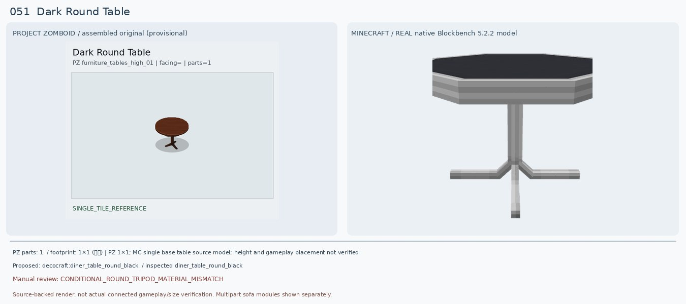
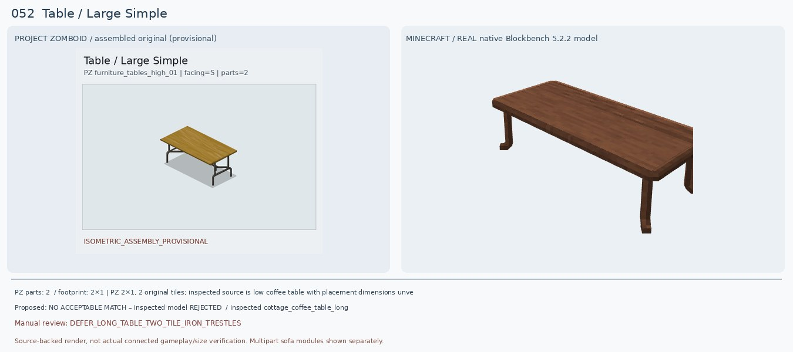
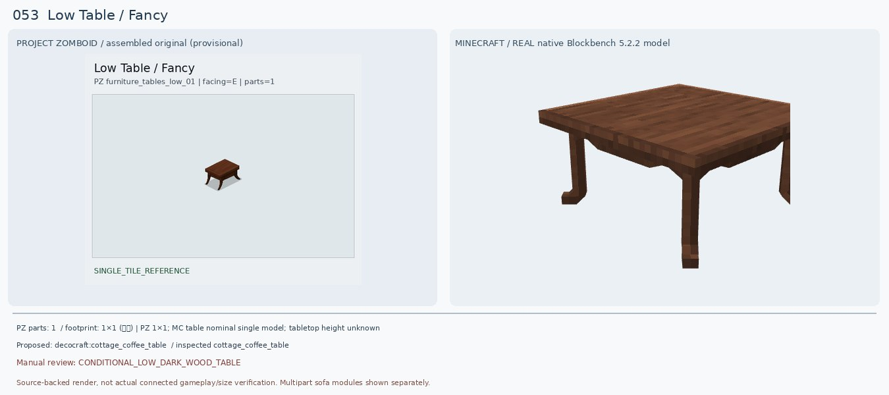
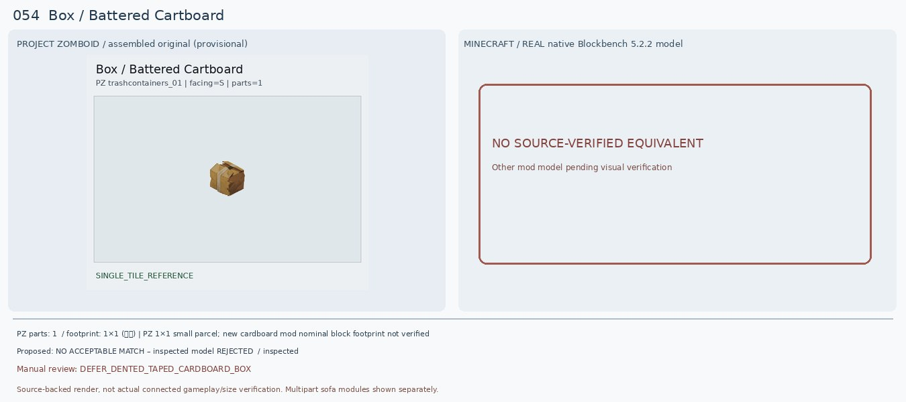
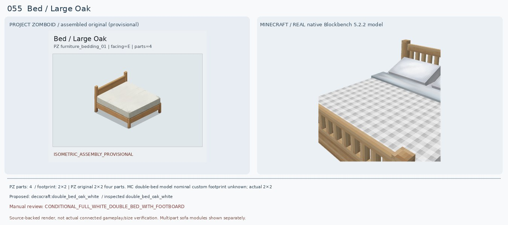
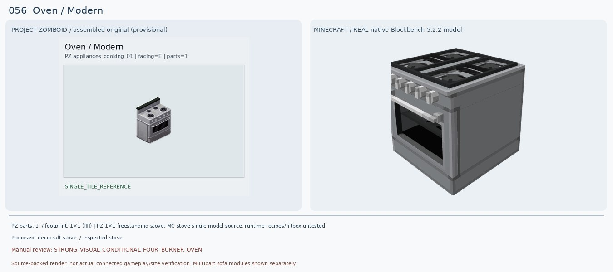
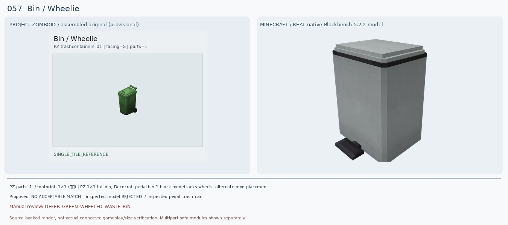
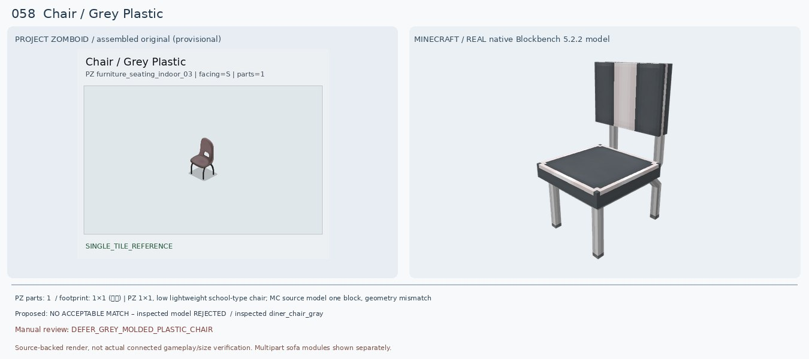
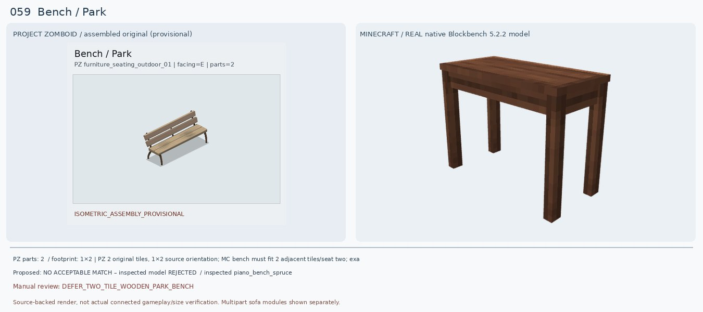
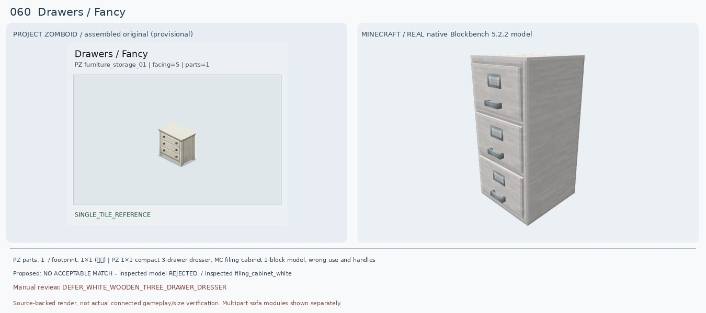

Dark Round Table
검수: CONDITIONAL_ROUND_TRIPOD_MATERIAL_MISMATCH
실제 선정 후보: decocraft:diner_table_round_black
실제로 렌더해 비교한 모델: decocraft:diner_table_round_black
다른 후보: decocraft:bamboo_coffee_table_round_yellow
크기: PZ 1×1; MC single base table source model; height and gameplay placement not verified
원본 외형: Small brown circular wooden tabletop, single central dark wood pole, three/four-foot splayed pedestal base
판정 이유: PZ는 진갈색 목제 원형 상판+중앙 기둥과 갈라진 다리다. 실제 Decocraft Diner Table Round Black(21 cubes)은 원형/중앙 기둥/삼발이 구조가 비슷하지만 검정 상판·회색 금속 지지대여서 목재 재질은 불일치. Bamboo Round Yellow는 노란 4다리 격자라 하부형태가 더 멀다. 기존 Macaw 모델은 정사각 두꺼운 석판처럼 렌더되어 반려.
다음 조치: 짙은 목재 원형 삼발이 식탁 찾기. 카페·빈티지 가구 모드 또는 목재 텍스처 변형 확인.
PZ 원본 메타데이터
{"BlocksPlacement": [""], "CanScrap": [""], "CustomName": ["Dark Round Table"], "GenericCraftingSurface": ["true"], "IsLow": [""], "IsMoveAble": [""], "IsTable": [""], "Material": ["Wood"], "Material2": ["Nails"], "PickUpWeight": ["100"], "ScrapSize": ["Small"], "Surface": ["27"], "solidtrans": [""]}
Table / Large Simple
검수: DEFER_LONG_TABLE_TWO_TILE_IRON_TRESTLES
실제 선정 후보: 없음 — 후속 검토
실제로 렌더해 비교한 모델: decocraft:cottage_coffee_table_long
다른 후보: decocraft:cottage_coffee_table_long [rejected: too low and wooden legs]
크기: PZ 2×1, 2 original tiles; inspected source is low coffee table with placement dimensions unverified
원본 외형: Two-tile completed long light honey-wood high tabletop with thin black metal folding/trestle leg supports
판정 이유: PZ는 길이 2칸 밝은 나무 높은 테이블, 철제 검정 접이식 가대형 다리이다. 새 Cottage Coffee Table Long은 단색 어두운 갈색이고 높이가 낮고 얇은 나무다리라 형태/재질/높이가 전부 달라 정답으로 승인하지 않는다. 기존 Decocraft Table Setting Double은 아예 접시·컵 세트였으므로 완전 반려.
다음 조치: 2×1 나무 상판+철제 검정 다리의 학교/접이식 테이블 모드 검색. 바닐라 트랩도어/슬랩+철창은 실제 같은 칸 충돌/높이 검증 전까지 아이디어만.
PZ 원본 메타데이터
{"BlocksPlacement": [""], "CanScrap": [""], "CustomName": ["Table"], "Facing": ["S"], "GenericCraftingSurface": ["true"], "GroupName": ["Large Simple"], "IsLow": [""], "IsMoveAble": [""], "IsTable": [""], "Material": ["Nails"], "Material2": ["Wood"], "PickUpWeight": ["100"], "ScrapSize": ["Small"], "SnowTile": ["object_snow_overlay_04_228", "object_snow_overlay_04_229"], "SpriteGridPos": ["0,0", "1,0"], "Surface": ["29"], "solidtrans": [""]}
Low Table / Fancy
검수: CONDITIONAL_LOW_DARK_WOOD_TABLE
실제 선정 후보: decocraft:cottage_coffee_table
실제로 렌더해 비교한 모델: decocraft:cottage_coffee_table
다른 후보: decocraft:cottage_coffee_table_oval
크기: PZ 1×1; MC table nominal single model; tabletop height unknown
원본 외형: Low dark red-brown small rectangular/square coffee table, beveled top and four elegant curved/slanted legs
판정 이유: PZ는 어두운 갈색 모서리 가공 상판과 바깥으로 휘는 네 다리가 있는 작은 낮은 탁자. 새 Cottage Coffee Table 실제 원본 33 cubes 모델은 목재 색감·낮은 상판·네 다리 형태가 유사해 기존 Macaw 회색 두꺼운 석판보다 낫다. 다만 원본은 더 작고 다리는 더 장식적이므로 정확한 일치가 아니다.
다음 조치: 실제 1칸 크기·상판 높이·다리 각도/색상 비교 후 적용 여부 결정.
PZ 원본 메타데이터
{"BlocksPlacement": [""], "CanScrap": [""], "CustomName": ["Low Table"], "Facing": ["E"], "ForceSingleItem": [""], "GenericCraftingSurface": ["true"], "GroupName": ["Fancy"], "IsLow": [""], "IsMoveAble": [""], "IsTable": [""], "Material": ["Wood"], "Material2": ["Nails"], "PickUpWeight": ["50"], "ScrapSize": ["Small"], "Surface": ["12"], "solidtrans": [""]}
Box / Battered Cartboard
검수: DEFER_DENTED_TAPED_CARDBOARD_BOX
실제 선정 후보: 없음 — 후속 검토
실제로 렌더해 비교한 모델: NO_RELEVANT_NATIVE_MODEL
다른 후보: Cardboard box mod (Forge 1.20.1), Shipping; concrete 3D model ID unverified
크기: PZ 1×1 small parcel; new cardboard mod nominal block footprint not verified
원본 외형: Small crushed uneven light-brown taped cardboard parcel, wrinkled flaps and torn upper opening
판정 이유: PZ는 찌그러진 옅은 갈색 종이박스로, 테이프와 찢어지거나 구겨진 윗부분이 중요하다. 기존 Refurbished Mail Box는 불완전한 큰 목제 기둥 형태로 아예 종류가 틀리다. 실제 Decocraft 25개 후보 목록에는 닮은 종이상자가 없어서 우측에 없는 모델의 가상 렌더를 만들지 않는다. Forge 1.20.1 호환 Cardboard box 모드와 Shipping은 배포처 확인까지만 했다.
다음 조치: https://modrinth.com/mod/cardboard-box (Forge 1.20.1) 원본 JAR의 Cardboard Box/Sealed Box 모델 렌더링, 뚜껑/찌그러진 정도 확인. https://modrinth.com/mod/shipping 도 추가 검토.
PZ 원본 메타데이터
{"BlocksPlacement": [""], "CanScrap": [""], "ContainerCapacity": ["10"], "ContainerCloseSound": ["CardboardClose"], "ContainerOpenSound": ["CardboardOpen"], "ContainerPutSound": ["CardboardTransferItem"], "ContainerTakeSound": ["CardboardTransferItem"], "CustomName": ["Box"], "Facing": ["S"], "FitsBeneathCountertop": [""], "GroupName": ["Battered Cartboard"], "IsLow": [""], "IsMoveAble": [""], "Material": ["Paper"], "PickUpWeight": ["20"], "container": ["smallbox"]}
Bed / Large Oak
검수: CONDITIONAL_FULL_WHITE_DOUBLE_BED_WITH_FOOTBOARD
실제 선정 후보: decocraft:double_bed_oak_white
실제로 렌더해 비교한 모델: decocraft:double_bed_oak_white
다른 후보: minecraft:white_bed ×2 side by side [vanilla schematic, not proper joined double-bed]
크기: PZ original 2×2 four parts. MC double-bed model nominal custom footprint unknown; actual 2×2 placement not verified
원본 외형: Four-tile PZ completed 2×2 oak-framed double bed, cream-white single mattress, solid horizontal plank headboard, little or no footboard
판정 이유: PZ 원본은 큰 연한 참나무 침대 틀에 연속된 흰 침구, 등받이는 넓은 수평 나무판, 발치에는 낮은 나무 프레임. Decocraft Oak White는 36 cubes로 정상 렌더되며 원목 프레임·흰 침구는 가까우나 흰 회색 체크 패턴, 분리된 베개, 세로살 머리판·발치 난간이 원본과 명확히 다르다. 기존 매칭은 조건부였으나 외형을 재평가해 조건부 유지.
다음 조치: MC 원본 JSON 블록 경계와 실제 게임 2×2 차지 여부 확인. Vanilla white bed 2개 나란히는 seam 발생하므로 동일 2×2로 인정 금지.
PZ 원본 메타데이터
{"BedType": ["goodBed"], "BlocksPlacement": [""], "CanBreak": [""], "CanScrap": [""], "CustomName": ["Bed"], "Facing": ["E"], "GroupName": ["Large Oak"], "IsLow": [""], "IsMoveAble": [""], "Material": ["Nails"], "Material2": ["Wood"], "Material3": ["Fabric"], "PickUpLevel": ["2"], "PickUpTool": ["Hammer"], "PickUpWeight": ["200"], "PlaceTool": ["Hammer"], "SpriteGridPos": ["0,0", "0,1", "1,0", "1,1"], "Surface": ["29"], "bed": [""], "solidtrans": [""]}
Oven / Modern
검수: STRONG_VISUAL_CONDITIONAL_FOUR_BURNER_OVEN
실제 선정 후보: decocraft:stove
실제로 렌더해 비교한 모델: decocraft:stove
다른 후보: refurbished_furniture:light_stove [native import broken; not approved]
크기: PZ 1×1 freestanding stove; MC stove single model source, runtime recipes/hitbox untested
원본 외형: Freestanding gray-silver modern kitchen electric oven/stove with four circular black burners, four front knobs, black oven glass window, black rear backsplash
판정 이유: PZ는 4개의 검은 둥근 화구·은회색 오븐 본체·전면 제어 노브·검정 오븐창·높은 검정 뒷판을 가진다. Decocraft Stove 실제 98큐브 모델은 4구 상판·노브·은회색 전면/검정 창을 모두 갖춰 기존 Paladin Gray Stove의 단일 막대 누락 모델보다 훨씬 정확하다. 다만 화구는 사각 격자, 검정 뒷판 생략, 손잡이/도어 높이 차이. 게임에서 요리 기능은 별도로 확인해야 한다.
다음 조치: 추가 검증: PZ 스토브 후면 검정 뒷판, Decocraft 음식 조리 가능 여부, 1×1 배치, 오븐 문 방향.
PZ 원본 메타데이터
{"BlocksPlacement": [""], "CanScrap": [""], "ContainerCapacity": ["15"], "ContainerCloseSound": ["StoveDoorClose"], "ContainerOpenSound": ["StoveDoorOpen"], "ContainerPosition": ["Low"], "ContainerPutSound": ["StoveTransferItem"], "ContainerTakeSound": ["StoveTransferItem"], "CustomName": ["Oven"], "Facing": ["E"], "GroupName": ["Modern"], "IsLow": [""], "IsMoveAble": [""], "IsoType": ["IsoStove"], "Material": ["Fridge"], "Material2": ["Electric"], "Material3": ["MetalScrap"], "MaterialType": ["Metal"], "PickUpLevel": ["3"], "PickUpTool": ["Electrician"], "PickUpWeight": ["200"], "PlaceTool": ["Electrician"], "Surface": ["34"], "container": ["stove"], "solidtrans": [""]}
Bin / Wheelie
검수: DEFER_GREEN_WHEELED_WASTE_BIN
실제 선정 후보: 없음 — 후속 검토
실제로 렌더해 비교한 모델: decocraft:pedal_trash_can
다른 후보: Skart's Decorations Wheelie Bins (Forge 1.20.1; mod presence confirmed but actual model unverified)
크기: PZ 1×1 tall bin; Decocraft pedal bin 1-block model lacks wheels; alternate mod placement unverified
원본 외형: Tall dark green rectangular outdoor wheelie bin with hinged lid, rear push handle and two black wheels
판정 이유: PZ는 초록색 긴 본체, 상단 양쪽 덮개, 뒤쪽 손잡이와 밑바퀴 2개가 있는 이동식 쓰레기통. 기존 Refurbished recycle bin은 회색 일반 통으로 뚜껑/바퀴가 없고 부품도 불완전하다. 새 Decocraft Pedal Trash Can은 직육면체에 덮개는 있으나 회색이며 작은 바닥 페달뿐이어서 колес wheelie bin과 전혀 다름. Skart's Decorations 0.3 1.20.1 Forge에 Wheelie Bins 추가 이력이 있으나 모델 ID/초록 변형 실제 렌더 필요.
다음 조치: https://www.curseforge.com/minecraft/mc-mods/skarts-decorations/files/5112417 에 Wheelie Bins 존재. 1.20.1 JAR에서 색상별 모델/바퀴/손잡이/배치 렌더링.
PZ 원본 메타데이터
{"BlocksPlacement": [""], "CanScrap": [""], "ContainerCapacity": ["20"], "ContainerCloseSound": ["BinPlasticCoverClose"], "ContainerOpenSound": ["BinPlasticCoverOpen"], "ContainerPutSound": ["BinPlasticCoverTransferItem"], "ContainerTakeSound": ["BinPlasticCoverTransferItem"], "CustomName": ["Bin"], "DamagedSprite": ["damaged_objects_01_12"], "Facing": ["S"], "GroupName": ["Wheelie"], "HitByCar": [""], "IsMoveAble": [""], "IsTrashCan": [""], "Material": ["PlasticHard"], "Material2": ["AluminumScrap"], "MaterialType": ["Plastic"], "MinimumCarSpeedDmg": ["10"], "PickUpWeight": ["100"], "SnowTile": ["object_snow_overlay_01_152"], "WheelieBin": [""], "container": ["bin"]}
Chair / Grey Plastic
검수: DEFER_GREY_MOLDED_PLASTIC_CHAIR
실제 선정 후보: 없음 — 후속 검토
실제로 렌더해 비교한 모델: decocraft:diner_chair_gray
다른 후보: decocraft:school_chair_gray (not equivalent hand-hole)
크기: PZ 1×1, low lightweight school-type chair; MC source model one block, geometry mismatch
원본 외형: Grey/lilac one-piece molded plastic back and seat, oval/rounded handle cut-out in lower back, slender black curved metal four-leg frame
판정 이유: PZ는 한 몸체로 굽어진 회보라 플라스틱 좌석과 등받이, 가운데 손잡이 구멍, 검정 얇은 금속 다리. 새 Diner Chair Gray는 색상과 금속다리가 비슷하나 등받이가 납작한 사각판에 굵은 흰 줄무늬가 있고 구멍이 없다. School Chair Gray도 판형 등받이와 금속 직선다리라 동일한 성형 의자가 아니다. 기존 PFM Gray Arm Chair는 안락의자 블록 형태로 구조 불일치.
다음 조치: Forge 1.20.1 학교 의자/플라스틱 방문객 의자 모드에서 등받이 손잡이 구멍이 실제 모델에 있는지 확인. 바닐라 계단은 구멍/다리 부재로 비권장.
PZ 원본 메타데이터
{"BedType": ["badBed"], "BlocksPlacement": [""], "CanScrap": [""], "CustomName": ["Chair"], "Facing": ["S"], "GroupName": ["Grey Plastic"], "IsLow": [""], "IsMoveAble": [""], "Material": ["Fridge"], "Material2": ["PlasticHard"], "PickUpWeight": ["75"], "ScrapSize": ["Small"], "SeatMaterial": ["Plastic"], "Surface": ["17"], "bed": [""]}
Bench / Park
검수: DEFER_TWO_TILE_WOODEN_PARK_BENCH
실제 선정 후보: 없음 — 후속 검토
실제로 렌더해 비교한 모델: decocraft:piano_bench_spruce
다른 후보: Just Outdoor Stuffs (1.20.1 Forge) two-player bench / Blockables Chairs bench with back (unverified actual model)
크기: PZ 2 original tiles, 1×2 source orientation; MC bench must fit 2 adjacent tiles/seat two; exact placement not tested
원본 외형: PZ 1×2 or rotated 2×1 wooden outdoor park bench, 2 long horizontal slat backrails, two plank seat boards and brown bent metal legs, full two-tile assembly
판정 이유: PZ는 목제 2줄 등받이+긴 이중 나무판 좌석+얇은 갈색 철제 받침다리로 구성되는 길쭉한 공원 벤치다. 기존 Decocraft Gym Bench는 헬스장 운동 기구였고 새 Piano Bench Spruce는 등받이도 없고 폭도 1칸인 피아노 의자라 둘 다 불합격. Just Outdoor Stuffs는 1.20.1 Forge 지원과 2인 벤치 기능까지 공식 소개에서 확인됐지만 실제 모델과 PZ처럼 2칸인지 아직 확인하지 않았다.
다음 조치: https://modrinth.com/project/6hCfRrRD (Forge 1.20.1)와 https://modrinth.com/mod/movables-chairs/ 의 bench with back 원본 모델/등받이/2칸 배치를 직접 검증.
PZ 원본 메타데이터
{"BedType": ["badBed"], "BlocksPlacement": [""], "CanBreak": [""], "CanScrap": [""], "CustomName": ["Bench"], "Facing": ["E"], "GroupName": ["Park"], "IsLow": [""], "IsMoveAble": [""], "Material": ["Nails"], "Material2": ["Wood"], "MaterialType": ["Wood"], "PickUpLevel": ["1"], "PickUpTool": ["Hammer"], "PickUpWeight": ["150"], "PlaceTool": ["Hammer"], "ScrapSize": ["Small"], "SeatMaterial": ["Wooden"], "SnowTile": ["object_snow_overlay_01_50", "object_snow_overlay_01_51"], "SpriteGridPos": ["0,0", "0,1"], "Surface": ["20"], "bed": [""], "chairE": [""], "solidtrans": [""]}
Drawers / Fancy
검수: DEFER_WHITE_WOODEN_THREE_DRAWER_DRESSER
실제 선정 후보: 없음 — 후속 검토
실제로 렌더해 비교한 모델: decocraft:filing_cabinet_white
다른 후보: decocraft:modular_desk_drawers_white [two drawers, source preview verified]
크기: PZ 1×1 compact 3-drawer dresser; MC filing cabinet 1-block model, wrong use and handles
원본 외형: Ivory painted wood chest of three drawers, each with two small round black knobs (six knobs total), thick top, slightly distressed plinth
판정 이유: PZ는 크림 흰색 목제 3단 서랍장이며 서랍마다 검정 동그란 손잡이 2개(총 6개). 새로운 Decocraft Filing Cabinet White는 실제 렌더에서 3단이긴 하나 흰 철제 문서 보관함으로 각 서랍마다 긴 금속 손잡이와 라벨 칸이 있다. Modular Desk Drawers White는 흰색 목제에 가깝지만 2단만 있어 둘 다 완성형으로는 맞지 않는다. 기존 Macaw BookShelf Drawer 렌더는 초록 판 한 장이라 무효.
다음 조치: Furnitury/Skniro/추가 Forge 1.20.1 가구 모드에서 3단 서랍+6개 검정 둥근 손잡이를 갖는 목제 dresser 모델 확인.
PZ 원본 메타데이터
{"BlocksPlacement": [""], "CanBreak": [""], "CanScrap": [""], "ContainerCapacity": ["20"], "ContainerCloseSound": ["DrawerWoodClose"], "ContainerOpenSound": ["DrawerWoodOpen"], "ContainerPutSound": ["DrawerWoodTransferItem"], "ContainerTakeSound": ["DrawerWoodTransferItem"], "CustomName": ["Drawers"], "Facing": ["S"], "GroupName": ["Fancy"], "IsLow": [""], "IsMoveAble": [""], "IsTable": [""], "Material": ["Wood"], "Material2": ["Screws"], "PickUpLevel": ["2"], "PickUpTool": ["Hammer"], "PickUpWeight": ["100"], "PlaceTool": ["Hammer"], "ScrapSize": ["Small"], "Surface": ["34"], "container": ["dresser"], "solidtrans": [""]}